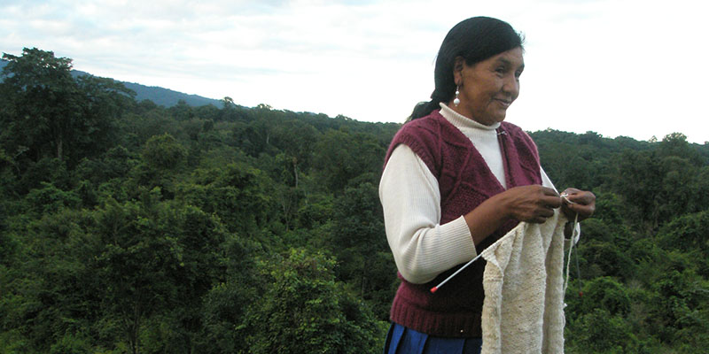
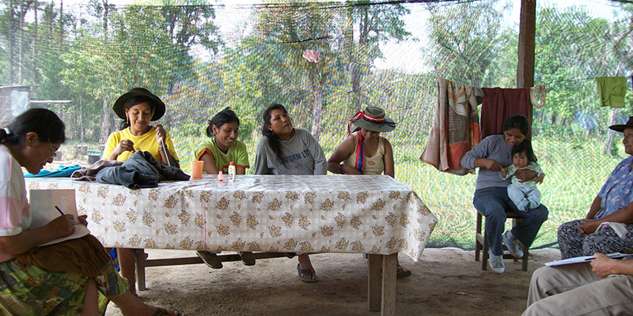
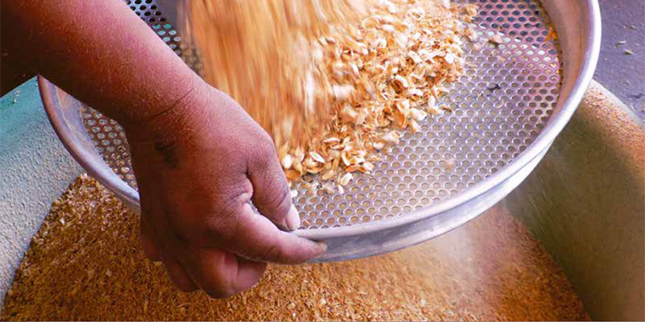

El hecho de fomentar el enfoque de cuenca permite realizar diagnósticos y planificar líneas de trabajo concretas entre diversos actores, estableciendo articulaciones intersectoriales e interinstitucionales, con el fin de planificar las políticas de desarrollo forestal de manera integral, contribuyendo a definir las necesidades y prioridades de intervención en cada región.
Planes integrales comunitarios
La reglamentación del artículo 12 de la Ley Nº 26.331 de Presupuestos Mínimos para la Protección Ambiental de los Bosques Nativos define como una de las competencias del Programa Nacional de Protección de Bosques, “impulsar las medidas necesarias para garantizar que el aprovechamiento de los bosques nativos sea sostenible, considerando a las comunidades indígenas originarias que los habitan o dependan de ellos, procurando la minimización de los efectos ambientales negativos”.
En este marco, el Proyecto Bosques Nativos y Comunidad que impulsa el Ministerio de Ambiente y Desarrollo Sostenible de la Nación, fomenta el uso racional de los bosques y fortalece a las comunidades para que puedan permanecer en sus territorios con el sustento de los bienes y servicios que estos ofrecen, promoviendo que los pequeños productores forestales formulen propuestas de uso sustentable para plasmarlas en Planes Integrales Comunitarios (PICs).

Planes integrales comunitarios - Fuente: Mauricio Mattenet

Planes integrales comunitarios -Fuente: Mauricio Mattenet
El Plan Integral Comunitario es un instrumento de planificación participativa de las actividades forestales, agrícolas y pecuarias del territorio que ocupan una o más comunidades, que tiene por objetivo dar sostenibilidad a sus medios de vida, manteniendo y recuperando los bosques que utilizan.
Productos forestales no madereros
Estos productos son definidos como “Todos los bienes de origen biológico distintos de la madera, la leña y el carbón vegetal y los servicios brindados por los bosques, otras áreas forestales y los árboles fuera de los bosques”.
Población
Productos vegetales
| Categorías |
Descripción |
| Alimentos |
Productos vegetales y bebidas producto de frutos, nueces, semillas, raíces, hongos, etc. |
| Forrajes |
Forraje para animales, alimento para abejas producto de las hojas, frutas, etc. |
| Medicinas |
Plantas medicinales (por ej. hojas, corteza, raíces) utilizadas en la medicina tradicional y/o en la industria farmacéutica. |
| Perfumes y cosméticos |
Plantas aromáticas que proporcionan aceites (volátiles) esenciales y otros productos utilizados para fines cosméticos. |
| Teñido y curtido |
Material vegetal (corteza y hojas) que proporciona taninos y otras partes de plantas (especialmente hojas y frutos) usados como colorantes. |
| Utensilios, artesanías y materiales de construcción |
Grupos heterogéneos de productos incluyendo techado, bambú, rota, hojas para envolver, fibras. |
| Productos ornamentales |
Plantas enteras (por ejemplo, orquídeas) y parte de plantas, (e.g. recipientes hechos de raíces) utilizados para propósitos ornamentales. |
| Exudados |
Sustancias tales como goma (hidrosoluble), resinas (no hidrosolubles) y látex (lechoso o jugo claro) extraído de las plantas por exudación. |
Animales y Productos animales
| Categorías |
Descripción |
| Animales vivos |
Principalmente vertebrados tales como mamíferos, aves, reptiles, utilizados o comprados como mascotas. |
| Miel y cera de abejas |
Productos proporcionados por las abejas. |
| Carne silvestre |
Carne proporcionada por animales vertebrados, principalmente mamíferos. |
| Otros productos animales comestibles |
Invertebrados comestibles tales como insectos (por ejemplo larvas) y otros productos animales "secundarios" (por ejemplo huevos, nidos). |
| Cueros y pieles para trofeos |
Cueros y pieles de animales utiizados para distintos propósitos. |
| Medicinas |
Animales enteros o partes animales tales como órganos varios utilizados como colorantes |
| Colorantes |
Animales enteros o partes animales tales como órganos varios utilizados como colorantes. |
| Otros productos animales no comestibles |
Por ejemplo: huesos utilizados como instrumentos. |
Verificación de censo forestal en el Plan de Manejo de la provincia de Salta - Foto: MAyDS

Producción de harina de algarroba - Foto: MAyDS
Para alcanzar un manejo sostenible de los bosques nativos es indispensable el aprovechamiento integral de los recursos forestales madereros y no madereros, incorporando a estos últimos en la gestión forestal sostenible. De esta manera se garantizaría la permanencia de los ecosistemas en su conjunto y la conservación de su diversidad biológica asociada, a la vez de posibilitar la mejora de la calidad de vida de sus habitantes al incrementar la productividad total, debiéndose asegurar su participación en la justa y equitativa distribución de los beneficios. Los PFNM también pueden ser recolectados de manera sostenida o bien, cultivados en forma mixta bajo sistemas agroforestales o simplemente como monocultivos.